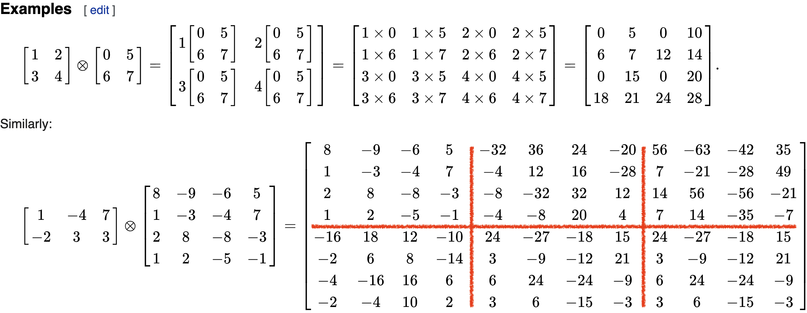
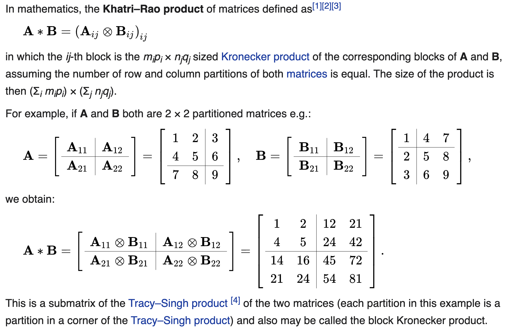
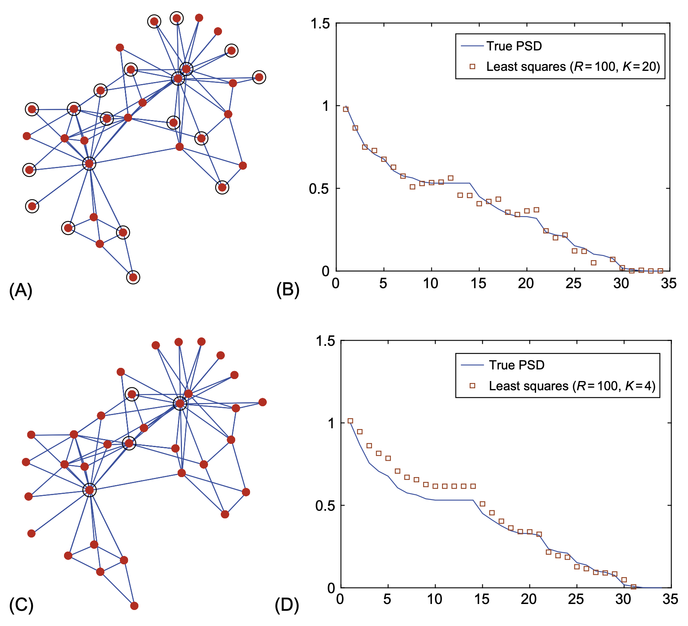

Preliminary Study
Kronecker product
크로네커곱의 정의는 아래와 같다.
\[{\bf A} \otimes {\bf B} =\begin{bmatrix} a_{11}{\bf B} & a_{12}{\bf B} & \dots & a_{1m}{\bf B} \\ a_{21}{\bf B} & a_{22}{\bf B} & \dots & a_{2m}{\bf B} \\ \dots & \dots & \dots & \dots \\ a_{n1}{\bf B} & a_{n2}{\bf B} & \dots & a_{nm}{\bf B} \\ \end{bmatrix}\]
두 행렬 \({\bf A}_{m\times n}\), \({\bf B}_{p\times q}\)의 크로네커곱 \({\bf A}\otimes {\bf B}\)의 차원은 \(mp \times nq\) 가 된다. 계산예시는 아래와 같다.

크로네커곱에 대한 성질들이 위키에 많이 있으니 참고하면 좋다.
Khatri–Rao product
카트리라오곱은 매트릭스 \({\bf A}\)와 \({\bf B}\)가 같은 차원의 블락매트릭스로 정의될때 각 서브매트릭스의 크로네커 곱으로 정의된다. 정의와 계산예시는 아래와 같다.

또 다른 계산예시는 아래와 같다.

12.2.1. Power Spectral Density
Djuric and Richard (2018) 의 Chap 12.2.1, Chap 12.3
Definition 12.3. The PSD of a random process \({\bf x}\) that is stationary with respect to GSO \({\bf S}={\bf V}{\bf \Lambda}{\bf V}^H\) is the nonnegative \(N \times 1\) vector \({\bf p}\)
\[{\bf p}:=\text{diag}\big({\bf V}^H {\bf C}_{\bf x}{\bf V} \big).\]
OversObserve that because \({\bf C}_{\bf x}\) is diagonalized by \({\bf V}\) the matrix \({\bf V}^H{\bf C}_{\bf x}{\bf V}\) is diagonal and it follows that the PSD in above equation corresponds to the eigenvalues of the positive semidefinite covariance matrix \({\bf C}_{\bf x}\). Thus, above equation is equivalent to
\[{\bf C}_{\bf x}={\bf V}\text{diag}({\bf p}){\bf V}^H.\]
Zero-mean white noise is an example of a random process that is stationary with respect to any graph shift \({\bf S}\). The PSD of white noise with covariance \(\mathbb{E}[{\bf n}{\bf n}^H] = \sigma^2{\bf I}\) is \({\bf p} = \sigma^2{\bf 1}\)1. Also notice that, by definition, any random process \({\bf x}\) is stationary with respect to the shift \({\bf S} = {\bf C}_{\bf x}\) defined by its covariance matrix, with corresponding PSD \({\bf p} = \text{diag}({\bf \Lambda})\). This can be exploited in the context of network topology inference. Given a set of graph signals \(\{{\bf x}_r\}_{r=1}^R\) it is common to infer the underlying topology by building a graph \({\cal G}_{corr}\) whose edge weights correspond to cross-correlations among the entries of the signals. In that case, the process generating those signals is stationary in the shift given by the adjacency of \({\cal G}_{corr}\); see Segarra et al. (2017) for details. A random process x is also stationary with respect to the shift given by its precision matrix, which is defined as the (pseudo-)inverse \({\bf \Theta}= {\bf C}^{\dagger}_{\bf x}\). The PSD, in this case, is \({\bf p} = \text{diag}(\Lambda)^{\dagger}\). This is particularly important when \({\bf x}\) is a Gaussian Markov Random Field (GMRF) whose Markovian dependence is captured by the unweighted graph \({\cal G}_{MF}\). It is well known Segarra et al. (2017) Ch. 19 that in these cases \({\bf \Theta}_{i,j}\) can be nonzero only if \((i,j)\) is either a link of \({\cal G}_{MF}\) , or an element in the diagonal. Thus, any GMRF is stationary with respect to the sparse shift \({\bf S} = {\bf \Theta}\), which captures the conditional dependence between the elements of \({\bf x}\). Two important properties that hold for random processes in time can be shown to be true as well for the PSD of graph processes.
Property 12.1 Let \({\bf x}\) be stationary in \({\bf S}\) with covariance \({\bf C}_{\bf x}\) and PSD \({\bf p}_x\). Consider a filter \({\bf H}\) with frequency response \(\tilde{\bf h}\) and define \({\bf y}:={\bf H}{\bf x}\). Then, the process \({\bf y}\):
Is stationary in \({\bf S}\) with covariance \({\bf C}_{\bf y}= {\bf H}{\bf C}_{\bf x}{\bf H}^H\).
Has a PSD given by \({\bf p}_{\bf y}=|\tilde{\bf h}|^2 \circ {\bf p}_{\bf x}\), where \(|\cdot|^2\) is applied elementwise.
Here \(\circ\) is elementwise matrix product
Property 12.2 Given a process \({\bf x}\) stationary in \({\bf S}={\bf V}{\bf \Lambda}{\bf V}^H\) with PSD \({\bf p}\), define the GFT process as \(\tilde{\bf x}={\bf V}^H{\bf x}\). Then, it holds that \(\tilde{\bf x}\) is uncorrelated and its covariance matrix is
\[{\bf C}_{\tilde{\bf x}}:= \mathbb{E}\left[\tilde{\bf x}\tilde{\bf x}^H \right]=\mathbb{E}\left[({\bf V}^H{\bf x})({\bf V}^H{\bf x})^H \right]=\text{diag}({\bf p}).\]
Property 12.1 is a statement of the spectral convolution theorem for graph signals. Property 12.2 is fundamental to motivate the analysis and modeling of stationary graph processes in the frequency domain, which we undertake in the remainder of this chapter. It also shows that if a process \({\bf x}\) is stationary in the shift \({\bf S} = {\bf V}{\bf \Lambda}{\bf V}^H\), then the GFT \({\bf V}^H\) provides the Karhunen-Loève expansion of the process.
The concept of stationarity and, consequently, that of PSD can be extended to processes defined jointly in a graph and over time. Before we review this extension in the ensuing section, we discuss requirements on the first moment of stationary graph processes.
The mean of stationary graph processes. While Definitions 12.1 and 12.2 assume that the random process \({\bf x}\) has mean \(\tilde{\bf x} := \mathbb{E}[{\bf x}] = {\bf 0}\), traditional stationary time processes are allowed to have a (nonzero) constant mean \(\bar{\bf x} = \alpha{\bf 1}\), with \(\alpha\) being an arbitrary scalar. Stationary graph processes, by contrast, are required to have a first-order moment of the form \(\bar{\bf x} = \alpha {\bf v}_k\), i.e., a scaled version of an eigenvector of \({\bf S}\). This choice: (i) takes into account the structure of the underlying graph; (ii) maintains the validity of Property 12.1; and (iii) encompasses the case \({\bf v}_k = {\bf 1}\) when \({\bf S}\) is either the adjacency matrix of a directed cycle or the Laplacian of any graph, recovering the classical first-order requirement for weak stationarity.
12.3. Power Spectral Density Estimators
We can exploit the fact that \({\bf x}\) is a stationary graph process in \({\bf S} = {\bf V}\text{diag}({\bf \Lambda}){\bf V}^H\) to design efficient estimators of the covariance \({\bf C}_{\bf x}\). In particular, instead of estimating \({\bf C}_{\bf x}\) directly, which has \(N(N + 1)/2\) degrees of freedom, one can estimate \({\bf p}\) first, which only has \(N\) degrees of freedom, and then leverage that \({\bf C}_{\bf x} = {\bf V}\text{diag}({\bf p}){\bf V}^H\). Motivated by this, the focus of this section is on estimating \({\bf p}\), the PSD of a stationary random graph process \({\bf x}\), using as input either one or a few realizations \(\{{\bf x}_r\}_{r=1}^R\) of \({\bf x}\). To illustrate the developments in Sections 12.3 and 12.4, we will use as a running example a random process defined on the well-known Zachary’s Karate club network Zachary (1977) (Figs. 12.3 and 12.4). As shown in Fig. 12.4, this graph consists of 34 nodes or members of the club and 78 undirected edges symbolizing friendships among members.


Nonparametric PSD estimators
Nonparametric estimators—as opposed to their parametric counterparts—do not assume any specific generating model on the process \({\bf x}\). This more agnostic view of \({\bf x}\) comes with the price of needing, in general, to observe more graph signals to achieve satisfactory performance. In this section, we extend to the graph setting the periodogram, the correlogram, and the least-squares (LS) estimator, which are classical unbiased nonparametric estimators. Moreover, for the special case where the observations are Gaussian, we derive the Cramér-Rao lower bound. We also discuss the windowed average periodogram, which attains a better performance when a few observations are available by introducing bias in a controlled manner while drastically reducing the variance.
Periodogram, correlogram, and LS estimator
From \({\bf C}_{\tilde{\bf x}}:= \mathbb{E}\left[\tilde{\bf x}\tilde{\bf x}^H \right]=\mathbb{E}\left[({\bf V}^H{\bf x})({\bf V}^H{\bf x})^H \right]=\text{diag}({\bf p})\) it follows that one may express the PSD as \({\bf p}=\mathbb{E}\left[|{\bf V}^H{\bf x}|^2\right]\). That is, the PSD is given by the expected value of the squared frequency components of the random process. This leads to a natural approach for the estimation of \({\bf p}\) from a finite set of \(R\) realizations of the process \({\bf x}\). Indeed, we compute the \({\bf GFT} \tilde{\bf x}_r = {\bf V}^H{\bf x}_r\) of each observed signal \({\bf x}_r\) and estimate \({\bf p}\) as
\[ \hat{\bf p}_{pg}:= \frac{1}{R}\sum_{r=1}^R|\tilde{\bf x}_r|^2=\frac{1}{R}\sum_{r=1}^{R}|{\bf V}^H{\bf x}_{r}|^2. \]
The estimator \(\hat{\bf p}_{pg}\) is termed periodogram due to its evident similarity with its homonym2 in classical estimation. It is simple to show that \({\bf p}_{pg}\) is an unbiased estimator, that is, \(\mathbb{E}[\hat{\bf p}_{pg}]= {\bf p}\). A more detailed analysis of the performance of \(\hat{\bf p}_{pg}\), for the case where the observations are Gaussian, is given in Proposition 12.1.3
An alternative nonparametric estimation scheme, denominated correlogram, can be devised by starting from the definition of \({\bf p}\) in
\[{\bf p}:=\text{diag}\big({\bf V}^H {\bf C}_{\bf x}{\bf V} \big).\]
Namely, one may substitute \({\bf C}_{\bf x}\) in above equation by the sample covariance \(\hat{\bf C}_{\bf x} = \frac{1}{R}\sum_{r=1}^R{\bf x}_r{\bf x}_r^H\) computed based on the available observations to obtain
\[\hat{\bf p}_{cg}:= \text{diag}\left({\bf V}^H \hat{\bf C}_{\bf x}{\bf V} \right):=\text{diag}\left[{\bf V}^H\big[ \frac{1}{R}\sum_{r=1}^R{\bf x}_r{\bf x}_r^H\big]{\bf V} \right].\]
Notice that the matrix \({\bf V}^H\hat{\bf C}_{\bf x}{\bf V}\) is in general, not diagonal because the eigenbasis of \(\hat{\bf C}_{\bf x}\) differs from \({\bf V}\), the eigenbasis of \({\bf C}_{\bf x}\). Nonetheless, we keep only the diagonal elements \({\bf v}_i^H \hat{\bf C}_{\bf x}{\bf v}_i\) for \(i = 1, \dots , N\) as our PSD estimator. It can be shown that the correlogram \({\bf p}_{cg}\) and the periodogram \({\bf p}_{pg}\) lead to identical estimators, as is the case in classical signal processing.
The correlogram can also be interpreted as an LS estimator. The decomposition in \({\bf C}_{\bf x}={\bf V}\text{diag}({\bf p}){\bf V}^H\) allows a linear parameterization of the covariance matrix \({\bf C}_{\bf x}\) as
\[ {\bf C}_{\bf x}({\bf p})=\sum_{i=1}^N p_i{\bf v}_i{\bf v}_i^H. \]
This linear parametrization will also be useful for the sampling schemes developed in Section 12.4. Vectorizing \({\bf C}_{\bf x}\) in \({\bf C}_{\bf x}({\bf p})=\sum_{i=1}^N p_i{\bf v}_i{\bf v}_i^H\) results in a set of \(N^2\) equations in \({\bf p}\)
\[ {\bf c}_{\bf x} = \text{vec}({\bf C}_{\bf x})=\sum_{i=1}^{N}p_i \text{vec}({\bf v}_i{\bf v}_i^H)={\bf G}_{np}{\bf p}, \]
where \(\text{vec}({\bf v}_i{\bf v}_i^H)={\bf v}_i^\ast \otimes {\bf v}_i\). Relying on the Khatri-Rao product, we then form the \(N^2 \times N\) matrix \({\bf G}_{np}\) as
\[ {\bf G}_{np}:= \left[{\bf v}_1^\ast \otimes {\bf v}_1, \dots, {\bf v}_N^\ast \otimes {\bf v}_N \right] = {\bf V}^\ast \odot {\bf V}. \]
Here \(\otimes\) denote the Kronecker matrix product and \(\odot\) denote the Khatri-Rao matrix product.
Using the sample covariance matrix \(\hat{\bf C}_{\bf x}\) as an estimate of \({\bf C}_{\bf x}\), we can match the estimated covariance vector \(\hat{\bf c}_{\bf x}=\text{vec}(\hat{\bf C}_{\bf x})\) to the true covariance vector \({\bf c}_{\bf x}\) in the LS sense as
\[ \hat{\bf p}_{ls} = \underset{\bf p}{\operatorname{argmin}} \|\hat{\bf c}_{\bf x}-{\bf G}_{np}{\bf p}\|_2^2=({\bf G}_{np}^H{\bf G}_{np})^{-1}{\bf G}_{np}^H\hat{\bf c}_{\bf x}. \]
In other words, the LS estimator minimizes the squared error \(\text{tr}\left[\big(\hat{\bf C}_{\bf x} − \hat{\bf C}_{\bf x}({\bf p})\big)^T \big(\hat{\bf C}_{\bf x} − \hat{\bf C}_{\bf x}({\bf p})\big)\right]\). From expression \(\hat{\bf p}_{ls} = \underset{\bf p}{\operatorname{argmin}} \|\hat{\bf c}_{\bf x}-{\bf G}_{np}{\bf p}\|_2^2=({\bf G}_{np}^H{\bf G}_{np})^{-1}{\bf G}_{np}^H\hat{\bf c}_{\bf x}\) it can be shown that the \(i\)th element of \(\hat{\bf p}_{ls}\) is \({\bf v}_i^H \hat{\bf C}_{\bf x} {\bf v}_i\). Combining this with Eq.
\[\hat{\bf p}_{cg}:= \text{diag}\left({\bf V}^H \hat{\bf C}_{\bf x}{\bf V} \right):=\text{diag}\left[{\bf V}^H\big[ \frac{1}{R}\sum_{r=1}^R{\bf x}_r{\bf x}_r^H\big]{\bf V} \right]\]
we get that the LS estimator \(\hat{\bf p}_{ls}\) and the correlogram \(\hat{\bf p}_{cg}\) —and hence the periodogram as well— are all identical estimators. The estimators derived in this subsection do not assume any data distribution and are well suited for cases where the data probability density function is not available. In what follows, we provide performance bounds for these estimators under the condition that the observed signals are Gaussian.
Summary
GSO \({\bf S}={\bf V}{\bf \Lambda}{\bf V}^H\)에 대하여 정상인 시계열 \({\bf x}\)를 고려한다. 이 신호의 그래프퓨리에 변환4은 아래와 같이 구할 수 있다.
\[\tilde{\bf x}={\bf GFT} {\bf x} = {\bf V}^H{\bf x}\]
여기에서 \(\tilde{\bf x}\)를 \({\bf x}\)의 주파수응답(frequency representation)이라고 부른다.5 우리는 주파수와 주파수응답, 시각화 하고 싶을 때가 많다. 이유는 이러한 시각화는 \({\bf x}\)가 어떠한 요소들의 합으로 이루어져 있는지 파악할 수 있게 도움을 주기 때문이다. 하지만 보통은 주파수응답을 바로 사용하기보다 주파수응답의 제곱값을 사용한다.6 즉 아래의 값에 관심이 있다.
\[{\bf p}=\mathbb{E}\left[|{\bf V}^H{\bf x}|^2\right]\]
여기에서 \({\bf p}\)를 PSD (power spectrum density) 라고 한다.
\[{\bf p}:=\text{diag}\big({\bf V}^H {\bf C}_{\bf x}{\bf V} \big).\]
여기에서 \({\bf C}_{\bf x}\)는 \({\bf x}\)의 공분산 매트릭스이다.
Definition 12.3. The PSD of a random process \({\bf x}\) that is stationary with respect to GSO \({\bf S}={\bf V}{\bf \Lambda}{\bf V}^H\) is the nonnegative \(N \times 1\) vector \({\bf p}\)
\[{\bf p}:=\text{diag}\big({\bf V}^H {\bf C}_{\bf x}{\bf V} \big).\]
References
Footnotes
\({\bf 1}\) is length \(N\) vector with all elements are 1↩︎
동음이의어↩︎
Proposition 12.1은 뒤에 다루는데 \(\hat{\bf p}_{pg}\)의 분산에 대한 서술이 있음. 분산은 \(\mathbb{V}[\hat{\bf p}_{pg}]=\frac{2}{R}\text{diag}^2({\bf p})\)와 같음↩︎
좀 더 정확하게는 \({\bf V}^H\) 에 대한 그래프 변환이라고 한다↩︎
이 \(\tilde{\bf x}\)를 그냥 graph Fourier transform이라고 부르는 사람도 많다. 즉 그래프퓨리에변환이 (1) 변환매트릭스 \({\bf GFT}\)자체를 지칭할때도 있고 (2) 트랜스폼된 결과 \(\tilde{\bf x}\)를 지칭할때도 있음. 교재에서는 변환은 graph Fourier transform, 그리고 변환된 결과는 \({\bf x}\)의 주파수응답이라고 한다.↩︎
주파수응답의 제곱값은 주파수응답과 유사하게 해석할 수 있고, 여러가지 이론적 성질을 만족하기 때문에 그러하다↩︎